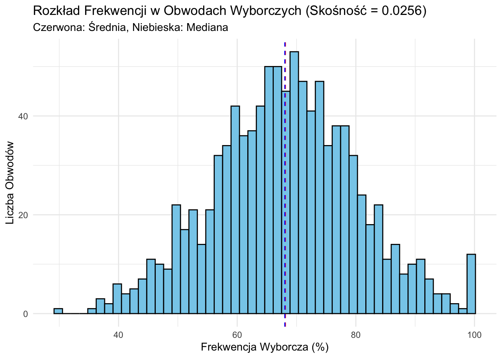
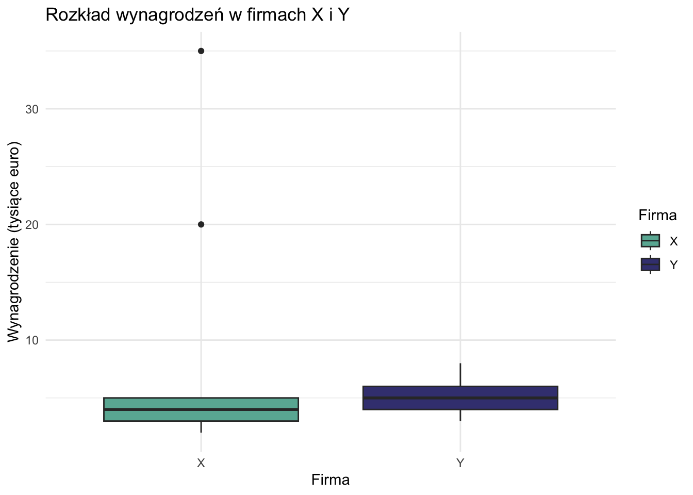

Statystyki opisowe są fundamentalnymi narzędziami w badaniach nauk społecznych, zapewniającymi zwięzłe podsumowanie charakterystyk danych. Pełnią kilka kluczowych funkcji:
Podsumowanie dużych zbiorów danych w przystępne informacje
Identyfikacja wzorców i trendów w danych
Wykrywanie potencjalnych anomalii lub wartości odstających
Zapewnienie podstawy do dalszej analizy statystycznej
12.2 Typy rozkładów danych
Important
Rozkład danych informuje o tym, jakie wartości przyjmuje zmienna i jak często.
Zrozumienie rozkładów danych jest kluczowe dla analizy i wizualizacji danych. W tym dokumencie przyjrzymy się różnym typom rozkładów i sposobom ich wizualizacji przy użyciu ggplot2 w R.
12.2.1 Rozkład normalny
Rozkład normalny, znany również jako rozkład Gaussa, jest symetryczny i ma kształt dzwonu.
# Generowanie danych o rozkładzie normalnymdane_normalne <-data.frame(x =rnorm(1000))# Wykresggplot(dane_normalne, aes(x)) +geom_histogram(aes(y = ..density..), bins =30, fill ="skyblue", color ="black") +geom_density(color ="red") +labs(title ="Rozkład normalny", x ="Wartość", y ="Gęstość")
Warning: The dot-dot notation (`..density..`) was deprecated in ggplot2 3.4.0.
ℹ Please use `after_stat(density)` instead.
12.2.2 Rozkład jednostajny
W rozkładzie jednostajnym wszystkie wartości mają równe prawdopodobieństwo wystąpienia.
# Generowanie danych o rozkładzie jednostajnymdane_jednostajne <-data.frame(x =runif(1000))# Wykresggplot(dane_jednostajne, aes(x)) +geom_histogram(aes(y = ..density..), bins =30, fill ="lightgreen", color ="black") +geom_density(color ="red") +labs(title ="Rozkład jednostajny", x ="Wartość", y ="Gęstość")
12.2.3 Rozkłady skośne
Rozkłady skośne są asymetryczne, z jednym ogonem dłuższym niż drugi.
# Generowanie danych o rozkładzie prawoskośnymdane_prawoskosne <-data.frame(x =rlnorm(1000))# Wykresggplot(dane_prawoskosne, aes(x)) +geom_histogram(aes(y = ..density..), bins =30, fill ="lightyellow", color ="black") +geom_density(color ="red") +labs(title ="Rozkład prawoskośny", x ="Wartość", y ="Gęstość")
12.2.4 Rozkład bimodalny
Rozkład bimodalny ma dwa szczyty, wskazujące na dwie odrębne podgrupy w danych.
# Generowanie danych bimodalnychdane_bimodalne <-data.frame(x =c(rnorm(500, mean =-2), rnorm(500, mean =2)))# Wykresggplot(dane_bimodalne, aes(x)) +geom_histogram(aes(y = ..density..), bins =30, fill ="lightpink", color ="black") +geom_density(color ="red") +labs(title ="Rozkład bimodalny", x ="Wartość", y ="Gęstość")
12.3 Wizualizacja rozkładów danych rzeczywistych
Użyjemy zbioru danych palmerpenguins do zbadania rozkładów danych rzeczywistych.
12.3.1 Histogram i wykres gęstości
ggplot(penguins, aes(x = flipper_length_mm)) +geom_histogram(aes(y = ..density..), bins =30, fill ="lightblue", color ="black") +geom_density(color ="red") +labs(title ="Rozkład długości płetw pingwinów", x ="Długość płetwy (mm)", y ="Gęstość")
Warning: Removed 2 rows containing non-finite outside the scale range
(`stat_bin()`).
Warning: Removed 2 rows containing non-finite outside the scale range
(`stat_density()`).
12.3.2 Wykres pudełkowy
Wykresy pudełkowe są przydatne do porównywania rozkładów między kategoriami.
ggplot(penguins, aes(x = species, y = body_mass_g, fill = species)) +geom_boxplot() +labs(title ="Rozkład masy ciała pingwinów według gatunku", x ="Gatunek", y ="Masa ciała (g)")
Warning: Removed 2 rows containing non-finite outside the scale range
(`stat_boxplot()`).
12.3.3 Wykres skrzypcowy
Wykresy skrzypcowe łączą cechy wykresu pudełkowego i wykresu gęstości.
ggplot(penguins, aes(x = species, y = body_mass_g, fill = species)) +geom_violin(trim =FALSE) +geom_boxplot(width =0.1, fill ="white") +labs(title ="Rozkład masy ciała pingwinów według gatunku", x ="Gatunek", y ="Masa ciała (g)")
Warning: Removed 2 rows containing non-finite outside the scale range
(`stat_ydensity()`).
Warning: Removed 2 rows containing non-finite outside the scale range
(`stat_boxplot()`).
12.3.4 Wykres grzbietowy
Wykresy grzbietowe są przydatne do porównywania wielu rozkładów.
library(ggridges)ggplot(penguins, aes(x = flipper_length_mm, y = species, fill = species)) +geom_density_ridges(alpha =0.6) +labs(title ="Rozkład długości płetw według gatunku pingwina",x ="Długość płetwy (mm)",y ="Gatunek")
Picking joint bandwidth of 2.38
Warning: Removed 2 rows containing non-finite outside the scale range
(`stat_density_ridges()`).
12.4 Podsumowanie
Zrozumienie i wizualizacja rozkładów danych są kluczowe w analizie danych. ggplot2 zapewnia elastyczny i potężny zestaw narzędzi do tworzenia różnych typów wykresów rozkładów. Badając różne techniki wizualizacji, możemy uzyskać wgląd w podstawowe wzorce i charakterystyki naszych danych.
12.5 Zrozumienie Wartości Odstających
Przed zagłębieniem się w konkretne miary, kluczowe jest zrozumienie pojęcia wartości odstających, ponieważ mogą one znacząco wpływać na wiele statystyk opisowych.
Wartości odstające to punkty danych, które znacznie różnią się od innych obserwacji w zbiorze danych. Mogą wystąpić z powodu:
Błędów pomiaru lub zapisu
Prawdziwych ekstremalnych wartości w populacji
Próbkowania z innej populacji
Wartości odstające mogą mieć istotny wpływ na wiele miar statystycznych, szczególnie tych opartych na średnich lub sumach kwadratów odchyleń. Dlatego ważne jest, aby:
Identyfikować wartości odstające zarówno poprzez metody statystyczne, jak i wiedzę dziedzinową
Badać przyczyny wartości odstających
Podejmować świadome decyzje o tym, czy włączać je do analiz, czy nie
W tym przewodniku omówimy, jak różne miary opisowe są dotknięte przez wartości odstające.
12.6 Miary Tendencji Centralnej
Miary tendencji centralnej mają na celu identyfikację “typowej” lub “centralnej” wartości w zbiorze danych. Trzy podstawowe miary to średnia, mediana i moda.
12.6.1 Średnia Arytmetyczna
Średnia arytmetyczna to suma wszystkich wartości podzielona przez liczbę wartości.
Wzór:\(\bar{x} = \frac{1}{n}\sum_{i=1}^n x_i\)
Ważna Właściwość: Średnia jest punktem równowagi w danych. Suma odchyleń od średniej zawsze wynosi zero:
\(\sum_{i=1}^n (x_i - \bar{x}) = 0\)
Ta właściwość sprawia, że średnia jest użyteczna w wielu obliczeniach statystycznych.
Interpretacja: - Ujemna kurtoza (-0,6577) wskazuje, że rozkład ma lżejsze ogony i jest bardziej płaski w porównaniu do rozkładu normalnego.
12.9 Statystyki Dwuwymiarowe
Statystyki dwuwymiarowe opisują związek między dwiema zmiennymi. Omówimy kilka miar, zaczynając od kowariancji i przechodząc do bardziej zaawansowanych miar korelacji.
12.9.1 Kowariancja
Kowariancja mierzy, jak dwie zmienne zmieniają się razem.
Podziel kowariancję przez iloczyn odchyleń standardowych
\(1,5 / (1,58 * 1,22) = 0,7746\)
Obliczenie w R:
cor(x, y, method ="pearson")
[1] 0.7745967
Interpretacja: - Współczynnik korelacji 0,7746 wskazuje na silny dodatni związek liniowy między x i y.
Zalety: - Niezależna od skali, zawsze między -1 a 1 - Szeroko rozumiana i stosowana - Testuje związki liniowe
Wady: - Wrażliwa na wartości odstające - Mierzy tylko związki liniowe - Zakłada normalnie rozłożone zmienne
12.9.3 Korelacja Spearmana
Korelacja Spearmana mierzy siłę i kierunek monotonicznego związku między dwiema zmiennymi, które mogą być ciągłe lub porządkowe.
Wzór:\(r_s = 1 - \frac{6 \sum d_i^2}{n(n^2 - 1)}\), gdzie \(d_i\) to różnica między rangami.
Przykład Ręcznego Obliczenia:
Użyjmy nieco innych danych: x: 1, 2, 3, 4, 5 y: 1, 3, 2, 5, 4
Krok
Opis
Obliczenie
1
Przypisz rangi obu zmiennym
x_ranga: 1, 2, 3, 4, 5
y_ranga: 1, 3, 2, 5, 4
2
Oblicz różnice w rangach (d)
0, -1, 1, -1, 1
3
Podnieś różnice do kwadratu
0, 1, 1, 1, 1
4
Zsumuj kwadraty różnic
\(\sum d_i^2 = 4\)
5
Zastosuj wzór
\(r_s = 1 - \frac{6(4)}{5(5^2 - 1)} = 0,8\)
Obliczenie w R:
x <-c(1, 2, 3, 4, 5)y <-c(1, 3, 2, 5, 4)cor(x, y, method ="spearman")
[1] 0.8
Interpretacja: - Korelacja Spearmana 0,8 wskazuje na silny dodatni związek monotoniczny między x i y.
Zalety: - Odporna na wartości odstające - Może wykrywać nieliniowe związki monotoniczne - Odpowiednia dla danych porządkowych
Wady: - Mniej silna niż korelacja Pearsona do wykrywania związków liniowych w normalnie rozłożonych danych - Nie dostarcza informacji o kształcie związku poza monotonicznością
12.9.4 Tabela Krzyżowa
Tabela krzyżowa (tabela kontyngencji) pokazuje związek między dwiema zmiennymi kategorycznymi.
Przykład:
Stwórzmy tabelę krzyżową dla dwóch zmiennych: - Poziom wykształcenia: Średnie, Wyższe, Podyplomowe - Status zatrudnienia: Zatrudniony, Bezrobotny
Interpretacja: - Ta tabela pokazuje liczbę osób w każdej kombinacji poziomu wykształcenia i statusu zatrudnienia. - Na przykład, możemy zobaczyć, ilu absolwentów szkół średnich jest zatrudnionych, a ilu bezrobotnych.
Zalety: - Zapewnia jasną wizualną reprezentację związku między zmiennymi kategorycznymi - Łatwa do zrozumienia i interpretacji - Podstawa dla wielu testów statystycznych (np. test chi-kwadrat niezależności)
Wady: - Ograniczona do danych kategorycznych - Może stać się nieporęczna przy wielu kategoriach - Nie dostarcza pojedynczej statystyki podsumowującej siłę związku
12.10 Wybór Odpowiedniej Miary
Przy wyborze statystyki dwuwymiarowej należy wziąć pod uwagę:
Typ danych:
Dane ciągłe: Kowariancja, korelacja Pearsona
Dane porządkowe: Korelacja Spearmana
Dane kategoryczne: Tabela krzyżowa
Typ związku:
Liniowy: Korelacja Pearsona
Monotoniczny, ale potencjalnie nieliniowy: Korelacja Spearmana
Obecność wartości odstających:
Jeśli wartości odstające są problemem, korelacja Spearmana jest bardziej odporna
Rozkład:
Dla normalnie rozłożonych danych korelacja Pearsona jest najbardziej silna
Dla rozkładów nienormalnych rozważ korelację Spearmana
Wielkość próby:
Dla bardzo małych prób metody nieparametryczne, takie jak korelacja Spearmana, mogą być preferowane
Pamiętaj, że często wartościowe jest użycie wielu miar i wizualizacji (takich jak wykresy rozrzutu), aby uzyskać kompleksowe zrozumienie związku między zmiennymi.
12.11 Wprowadzenie do Podstawowej Statystyki Wielowymiarowej
Statystyki wielowymiarowe obejmują analizę związków między trzema lub więcej zmiennymi jednocześnie. Ta sekcja wprowadzi niektóre podstawowe koncepcje i techniki analizy wielowymiarowej, koncentrując się na metodach opartych na korelacji.
12.11.1 Macierz Korelacji
Macierz korelacji to tabela pokazująca korelacje parami dla kilku zmiennych. Jest to podstawowe narzędzie w analizie wielowymiarowej.
Przykład: Stwórzmy macierz korelacji dla czterech zmiennych: wzrost, waga, wiek i dochód.
set.seed(123) # Dla powtarzalnościwzrost <-rnorm(100, 170, 10)waga <- wzrost *0.5+rnorm(100, 0, 5)wiek <-rnorm(100, 40, 10)dochod <- wiek *1000+rnorm(100, 0, 10000)dane <-data.frame(wzrost, waga, wiek, dochod)macierz_kor <-cor(dane)print(macierz_kor)
wzrost waga wiek dochod
wzrost 1.0000000 0.66712996 -0.12917601 -0.12246786
waga 0.6671300 1.00000000 -0.06814187 -0.04579492
wiek -0.1291760 -0.06814187 1.00000000 0.65654902
dochod -0.1224679 -0.04579492 0.65654902 1.00000000
Interpretacja: - Każda komórka pokazuje korelację między dwiema zmiennymi. - Przekątna zawsze wynosi 1 (korelacja zmiennej z samą sobą). - Szukaj silnych korelacji (bliskich 1 lub -1), aby zidentyfikować potencjalne związki.
12.11.2 Wizualizacja Związków Wielowymiarowych
12.11.2.1 Macierz Wykresów Rozrzutu
Macierz wykresów rozrzutu pokazuje parami związki między wieloma zmiennymi.
pairs(dane)

Interpretacja: - Każdy wykres pokazuje związek między dwiema zmiennymi. - Elementy na przekątnej pokazują rozkład każdej zmiennej. - Szukaj wzorców, skupisk lub trendów na wykresach.
Interpretacja: - Intensywność koloru i rozmiar kół wskazują na siłę korelacji. - Niebieskie kolory zazwyczaj wskazują na dodatnie korelacje, czerwone na ujemne.
12.11.3 Korelacja Cząstkowa
Korelacja cząstkowa mierzy związek między dwiema zmiennymi przy kontrolowaniu jednej lub więcej innych zmiennych.
Przykład: Obliczmy korelację cząstkową między wzrostem a wagą, kontrolując wiek.
library(ppcor)
Loading required package: MASS
Attaching package: 'MASS'
The following object is masked from 'package:dplyr':
select
pcor.test(dane$wzrost, dane$waga, dane$wiek)
estimate p.value statistic n gp Method
1 0.6654367 5.758157e-14 8.779896 100 1 pearson
Interpretacja: - Porównaj to z prostą korelacją między wzrostem a wagą. - Znacząca zmiana może wskazywać, że wiek odgrywa rolę w związku między wzrostem a wagą.
12.11.4 Korelacja Wielokrotna
Korelacja wielokrotna mierzy siłę związku między zmienną zależną a wieloma zmiennymi niezależnymi.
Przykład: Przewidźmy wagę na podstawie wzrostu i wieku.
model <-lm(waga ~ wzrost + wiek, data = dane)R <-sqrt(summary(model)$r.squared)print(paste("Współczynnik korelacji wielokrotnej:", R))
Interpretacja: - R waha się od 0 do 1, przy czym wyższe wartości wskazują na silniejsze związki. - R² (R-kwadrat) reprezentuje proporcję wariancji w zmiennej zależnej wyjaśnioną przez zmienne niezależne.
12.11.5 Analiza Czynnikowa
Analiza czynnikowa to technika używana do zredukowania wielu zmiennych do mniejszej liczby czynników leżących u podstaw.
Przykład: Wykonajmy prostą analizę czynnikową na naszym zbiorze danych.
library(psych)
Registered S3 method overwritten by 'psych':
method from
plot.residuals rmutil
Attaching package: 'psych'
The following objects are masked from 'package:ggplot2':
%+%, alpha
Loadings:
MR2 MR1
wzrost 0.798
waga 0.836
wiek 0.729
dochod 0.895
MR2 MR1
SS loadings 1.344 1.341
Proportion Var 0.336 0.335
Cumulative Var 0.336 0.671
Interpretacja: - Spójrz, które zmienne ładują się wysoko na każdy czynnik. - Spróbuj zinterpretować, co każdy czynnik może reprezentować na podstawie zmiennych, które się na niego ładują.
12.11.6 Uwagi dotyczące Analizy Wielowymiarowej
Wielkość próby: Techniki wielowymiarowe często wymagają większych prób dla stabilnych wyników.
Współliniowość: Wysokie korelacje między zmiennymi niezależnymi mogą powodować problemy w niektórych analizach.
Wartości odstające: Wielowymiarowe wartości odstające mogą mieć silny wpływ na wyniki.
Założenia: Wiele technik zakłada wielowymiarową normalność i liniowe związki.
Złożoność interpretacji: Wraz ze wzrostem liczby zmiennych interpretacja może stać się bardziej wyzwająca.
12.11.7 Podsumowanie
To wprowadzenie do statystyki wielowymiarowej opiera się na koncepcji korelacji, aby badać związki między wieloma zmiennymi. Techniki te zapewniają potężne narzędzia do zrozumienia złożonych zbiorów danych, ale wymagają również starannego rozważenia założeń i ograniczeń. W miarę postępu w Twojej podróży statystycznej napotkasz bardziej zaawansowane techniki wielowymiarowe, takie jak MANOVA, analiza dyskryminacyjna i modelowanie równań strukturalnych.
12.12 Ćwiczenie 1. Porównanie wynagrodzeń
12.12.1 Dane
Mamy dane o wynagrodzeniach (w tysiącach euro) z dwóch małych firm europejskich:
Index
Firma X
Firma Y
1
2
3
2
2
3
3
2
4
4
3
4
5
3
4
6
3
4
7
3
4
8
3
4
9
3
5
10
4
5
11
4
5
12
4
5
13
4
5
14
4
5
15
5
6
16
5
6
17
5
6
18
5
7
19
20
7
20
35
8
12.12.2 Miary tendencji centralnej
12.12.2.1 Średnia arytmetyczna
Średnia arytmetyczna to suma wszystkich wartości podzielona przez ich liczbę.
Wzór: \(\bar{x} = \frac{\sum_{i=1}^{n} x_i}{n}\)
12.12.2.1.1 Obliczenia ręczne dla Firmy X
Wartość (\(x_i\))
Częstość (\(f_i\))
\(x_i \cdot f_i\)
2
3
6
3
6
18
4
5
20
5
4
20
20
1
20
35
1
35
Suma
n = 20
Suma = 119
\(\bar{x} = \frac{119}{20} = 5,95\)
12.12.2.1.2 Obliczenia ręczne dla Firmy Y
Wartość (\(x_i\))
Częstość (\(f_i\))
\(x_i \cdot f_i\)
3
2
6
4
6
24
5
6
30
6
3
18
7
2
14
8
1
8
Suma
n = 20
Suma = 100
\(\bar{y} = \frac{100}{20} = 5\)
12.12.2.1.3 Weryfikacja w R
X <-c(2,2,2,3,3,3,3,3,3,4,4,4,4,4,5,5,5,5,20,35)Y <-c(3,3,4,4,4,4,4,4,5,5,5,5,5,5,6,6,6,7,7,8)mean(X)
[1] 5.95
mean(Y)
[1] 5
12.12.2.2 Mediana
Mediana to wartość środkowa w uporządkowanym zbiorze danych.
Q1 (25. percentyl): mediana pierwszych 10 liczb = 4
Q2 (50. percentyl, mediana): 5
Q3 (75. percentyl): mediana ostatnich 10 liczb = 6
12.12.4.3 Weryfikacja w R
quantile(X)
0% 25% 50% 75% 100%
2 3 4 5 35
quantile(Y)
0% 25% 50% 75% 100%
3 4 5 6 8
12.12.5 Wykres pudełkowy Tukeya
Wykres pudełkowy Tukeya wizualnie przedstawia rozkład danych na podstawie kwartyli. Użyjemy biblioteki ggplot2 do stworzenia wykresu.
library(ggplot2)library(tidyr)# Przygotowanie danychdane <-data.frame(Firma =rep(c("X", "Y"), each =20),Wynagrodzenie =c(X, Y))# Tworzenie wykresu pudełkowegoggplot(dane, aes(x = Firma, y = Wynagrodzenie, fill = Firma)) +geom_boxplot() +labs(title ="Rozkład wynagrodzeń w firmach X i Y",x ="Firma",y ="Wynagrodzenie (tysiące euro)") +theme_minimal() +scale_fill_manual(values =c("X"="#69b3a2", "Y"="#404080"))

12.12.5.1 Interpretacja wykresu pudełkowego
Pudełko reprezentuje rozstęp międzykwartylowy (IQR) od Q1 do Q3.
Linia wewnątrz pudełka to mediana (Q2).
Wąsy rozciągają się do najmniejszych i największych wartości w granicach 1,5 * IQR.
Punkty poza wąsami są uznawane za wartości odstające.
12.12.6 Porównanie wyników
Miara
Firma X
Firma Y
Średnia
5,95
5,00
Mediana
4
5
Dominanta
3
4 i 5
Wariancja
61,21
1,79
Odchylenie standard.
7,82
1,34
Q1
3
4
Q3
5
6
12.12.6.1 Kluczowe obserwacje:
Tendencja centralna: Firma X ma wyższą średnią, ale niższą medianę niż Firma Y, co wskazuje na prawostronnie skośny rozkład dla Firmy X.
Rozproszenie: Firma X wykazuje znacznie wyższą wariancję i odchylenie standardowe, sugerując większe dysproporcje w wynagrodzeniach.
Kształt rozkładu: Wynagrodzenia w Firmie Y są bardziej skupione, podczas gdy Firma X ma wartości ekstremalne (potencjalne wartości odstające), które znacząco wpływają na jej średnią i wariancję.
Kwartyle: Rozstęp międzykwartylowy (Q3 - Q1) Firmy Y jest nieznacznie większy, ale jej ogólny zakres jest znacznie mniejszy niż Firmy X.
12.12.7 Wnioski
Ta analiza porównawcza ujawnia znaczące różnice w strukturach wynagrodzeń między dwiema firmami. Firma X wykazuje większą zmienność i potencjalną nierówność w swojej skali płac, podczas gdy Firma Y demonstruje bardziej spójny i wąsko rozłożony zakres wynagrodzeń. Te spostrzeżenia mogą być cenne dla zrozumienia strategii wynagrodzeń i potencjalnych obszarów do przeglądu polityki w każdej z firm.
12.13 Ćwiczenie 2. Porównanie Zmienności Wielkości Okręgów Wyborczych Między Krajami
12.13.1 Dane
Mamy dane o wielkości okręgów wyborczych z dwóch krajów:
Kraj o wysokiej zmienności (X): 1, 3, 5, 7, 9, 11, 13, 15, 17, 19
Kraj o niskiej zmienności (Y): 8, 9, 9, 10, 10, 11, 11, 12, 12, 13
12.13.2 Miary Tendencji Centralnej
12.13.2.1 Średnia Arytmetyczna
Średnia arytmetyczna to suma wszystkich wartości podzielona przez ich liczbę.
Wzór: \(\bar{x} = \frac{\sum_{i=1}^{n} x_i}{n}\)
12.13.2.1.1 Obliczenia dla Kraju X
Wartości
Suma
1 + 3 + 5 + 7 + 9 + 11 + 13 + 15 + 17 + 19
100
\(\bar{x} = \frac{100}{10} = 10\)
12.13.2.1.2 Obliczenia dla Kraju Y
Wartości
Suma
8 + 9 + 9 + 10 + 10 + 11 + 11 + 12 + 12 + 13
105
\(\bar{y} = \frac{105}{10} = 10,5\)
12.13.2.2 Mediana
Mediana to środkowa wartość w uporządkowanym zbiorze danych.
Aby wizualnie porównać rozkład wielkości okręgów wyborczych między dwoma krajami, możemy użyć wykresu pudełkowego w stylu Tukeya. Ten typ wykresu zapewnia zwięzłe podsumowanie rozkładu danych, w tym medianę, kwartyle i potencjalne wartości odstające.
Porównanie Zmienności Wielkości Okręgów Wyborczych
12.13.7.1 Interpretacja Wykresu Pudełkowego
Wykres pudełkowy dostarcza kilku kluczowych informacji:
Pudełko reprezentuje rozstęp międzykwartylowy (IQR), z dolną krawędzią na Q1 i górną na Q3.
Linia wewnątrz pudełka reprezentuje medianę (Q2).
Wąsy rozciągają się do najmniejszej i największej wartości w zakresie 1,5 * IQR od krawędzi pudełka.
Punkty poza wąsami są uznawane za potencjalne wartości odstające i są wykreślane indywidualnie.
Na podstawie tego wykresu możemy zaobserwować:
Mediana wielkości okręgów dla Kraju Y jest nieznacznie wyższa niż dla Kraju X, co jest zgodne z naszymi wcześniejszymi obliczeniami.
Pudełko dla Kraju X jest znacznie większe niż dla Kraju Y, co wskazuje na większe rozproszenie środkowych 50% danych, a tym samym wyższą zmienność.
Dane Kraju X obejmują znacznie szerszy zakres, co widać po dłuższych wąsach, co dodatkowo potwierdza jego wyższą zmienność.
Dane Kraju Y są bardziej skupione, z mniejszym pudełkiem i krótszymi wąsami, co wskazuje na niższą zmienność.
Indywidualne punkty dla Kraju X są bardziej rozproszone, podczas gdy dla Kraju Y są bardziej skupione, co stanowi wizualną reprezentację różnicy w zmienności.
Ta wizualizacja za pomocą wykresu pudełkowego wzmacnia naszą wcześniejszą analizę numeryczną, wyraźnie pokazując kontrast w zmienności wielkości okręgów wyborczych między dwoma krajami.
12.13.8 Kluczowe Obserwacje
Tendencja Centralna: Oba kraje mają podobne średnie i mediany, co wskazuje, że ich przeciętne wielkości okręgów są zbliżone.
Rozproszenie:
Kraj X wykazuje znacznie wyższą wariancję i odchylenie standardowe, potwierdzając jego wysoką zmienność.
Rozstęp dla Kraju X (18) jest ponad trzy razy większy niż dla Kraju Y (5).
IQR dla Kraju X (12) jest cztery razy większy niż dla Kraju Y (3), wskazując na znacznie szersze rozproszenie środkowych 50% danych.
Kształt Rozkładu:
Kraj X ma rozkład równomierny bez wyraźnej dominanty.
Kraj Y ma bardziej skupiony rozkład z wieloma dominantami, wskazując na powszechne wielkości okręgów.
Współczynnik Zmienności:
CV Kraju X (60,6%) jest znacznie wyższy niż Kraju Y (15,0%), dostarczając standaryzowanej miary różnicy w zmienności.
Porównanie Wizualne:
Wykres pudełkowy wyraźnie ilustruje znaczącą różnicę w zmienności między dwoma krajami, potwierdzając nasze numeryczne odkrycia.
12.13.9 Wnioski
Ta analiza wyraźnie pokazuje kontrast w zmienności wielkości okręgów wyborczych między dwoma krajami:
Kraj X wykazuje wysoką zmienność, z wielkościami okręgów rozproszonymi szeroko od 1 do 19. Może to wskazywać na zróżnicowany system wyborczy z mieszanką małych (prawdopodobnie jednomandatowych) i dużych okręgów wielomandatowych.
Kraj Y wykazuje niską zmienność, z wielkościami okręgów ściśle skupionymi między 8 a 13. Sugeruje to bardziej jednolity system wyborczy, prawdopodobnie składający się z okręgów wielomandatowych średniej wielkości.
Te różnice w zmienności mogą mieć istotne implikacje dla reprezentacji politycznej, strategii partyjnych i wyników wyborów w każdym kraju. Wysoka zmienność (jak w Kraju X) może prowadzić do bardziej zróżnicowanej reprezentacji, ale może również skutkować bardziej złożonymi strategiami wyborczymi. Niska zmienność (jak w Kraju Y) może sprzyjać bardziej spójnej reprezentacji w okręgach, ale potencjalnie ograniczać różnorodność głosów politycznych.
Dodanie wykresu pudełkowego dostarcza potężnego narzędzia wizualnego do zrozumienia tych różnic, czyniąc kontrast między dwoma krajami natychmiast widocznym i uzupełniając szczegółową analizę numeryczną.
12.14 Appendix: Tabele Podsumowujące Typy Danych i Odpowiednie Miary Statystyczne
12.14.1 Tabela 1: Dane Dyskretne vs. Ciągłe
Charakterystyka
Dane Dyskretne
Dane Ciągłe
Definicja
Mogą przyjmować tylko określone wartości
Mogą przyjmować dowolną wartość w danym zakresie
Przykłady
Liczba dzieci, Rozmiar buta
Wzrost, Waga, Czas
Zalety
- Łatwe do kategoryzacji - Proste do zliczenia - Często łatwiejsze do analizy
- Bardziej precyzyjne pomiary - Umożliwiają bardziej zaawansowane analizy statystyczne - Mogą być grupowane w przedziały
Wady
- Ograniczona precyzja - Mogą nie uchwycić subtelnych różnic - Niektóre metody statystyczne mogą nie mieć zastosowania
- Mogą być bardziej złożone do analizy - Mogą wymagać większych próbek dla znaczącej analizy - Mogą wystąpić błędy zaokrągleń przy pomiarze
Wizualizacja
Wykresy słupkowe, Wykresy kołowe
Histogramy, Wykresy punktowe, Wykresy liniowe
12.14.2 Tabela 2: Typologia Skal Pomiarowych Stevensa
Charakterystyka
Nominalna
Porządkowa
Interwałowa
Ilorazowa
Definicja
Kategorie bez ustalonego porządku
Uporządkowane kategorie
Równe interwały, brak prawdziwego zera
Równe interwały z prawdziwym zerem
Przykłady
Płeć, Grupa krwi
Poziom wykształcenia, Skale Likerta
Temperatura (°C, °F), Daty kalendarzowe
Wzrost, Waga, Wiek
Zalety
- Łatwe do zebrania - Proste do kategoryzacji
- Uwzględnia porządek - Przydatne do rankingów
- Pozwala na znaczące różnice - Możliwe bardziej zaawansowane analizy
- Najbardziej wszechstronne - Pozwala na wszystkie operacje arytmetyczne
Wady
- Ograniczone opcje analityczne - Brak operacji arytmetycznych
- Różnice między kategoriami nie są kwantyfikowalne - Ograniczone operacje arytmetyczne
- Brak prawdziwego punktu zerowego - Stosunki nie są znaczące
- Może być trudno uzyskać prawdziwe pomiary ilorazowe w niektórych dziedzinach
12.14.3 Tabela 3: Odpowiednie Miary Statystyczne dla Różnych Typów Danych
* Uwaga: Chociaż te miary można obliczyć dla danych dyskretnych, interpretacja powinna być ostrożna, zwłaszcza dla danych z niewielką liczbą możliwych wartości.
12.14.4 Tabela 4: Zalety i Wady Różnych Miar Statystycznych
12.14.4.1 Miary Tendencji Centralnej
Miara
Zalety
Wady
Zastosowanie do
Średnia
- Wykorzystuje wszystkie punkty danych - Pozwala na dalsze obliczenia statystyczne - Idealna dla danych o rozkładzie normalnym
- Wrażliwa na wartości odstające - Nieodpowiednia dla rozkładów skośnych - Bez znaczenia dla danych nominalnych
Interwałowe, Ilorazowe, niektóre Dyskretne, Ciągłe
Mediana
- Niewrażliwa na wartości odstające - Dobra dla rozkładów skośnych - Może być stosowana do danych porządkowych
- Ignoruje rzeczywiste wartości większości punktów danych - Mniej użyteczna do dalszych analiz statystycznych
- Wykorzystuje wszystkie punkty danych - Podstawa wielu procedur statystycznych
- Wrażliwa na wartości odstające - Jednostki są podniesione do kwadratu (mniej intuicyjne)
Interwałowe, Ilorazowe, niektóre Dyskretne, Ciągłe
Odchylenie standardowe
- Wykorzystuje wszystkie punkty danych - Te same jednostki co oryginalne dane - Szeroko stosowane i zrozumiałe
- Wrażliwe na wartości odstające - Zakłada w przybliżeniu rozkład normalny dla interpretacji
Interwałowe, Ilorazowe, niektóre Dyskretne, Ciągłe
Współczynnik zmienności
- Pozwala na porównanie między zbiorami danych o różnych jednostkach lub średnich
- Może być mylący, gdy średnie są bliskie zeru - Bez znaczenia dla danych z wartościami ujemnymi
Ilorazowe, niektóre Interwałowe
12.14.4.3 Miary Korelacji/Asocjacji
Miara
Zalety
Wady
Zastosowanie do
r Pearsona
- Mierzy zależność liniową - Szeroko stosowany i zrozumiały
- Zakłada rozkład normalny - Wrażliwy na wartości odstające - Uchwytuje tylko zależności liniowe
Interwałowe, Ilorazowe, Ciągłe
Rho Spearmana
- Może być stosowany do danych porządkowych - Uchwytuje zależności monotoniczne - Mniej wrażliwy na wartości odstające
- Traci informacje przez konwersję na rangi - Może pominąć niektóre typy zależności
Porządkowe, Interwałowe, Ilorazowe
Tau Kendalla
- Może być stosowany do danych porządkowych - Bardziej odporny niż Spearman dla małych próbek - Ma ładną interpretację (prawdopodobieństwo zgodności)
- Traci informacje, biorąc pod uwagę tylko porządek - Bardziej intensywny obliczeniowo
Porządkowe, Interwałowe, Ilorazowe
Chi-kwadrat
- Może być stosowany do danych nominalnych - Testuje niezależność zmiennych kategorycznych
- Wymaga dużych rozmiarów próbek - Wrażliwy na rozmiar próbki - Nie mierzy siły asocjacji
Nominalne, Porządkowe
V Craméra
- Może być stosowany do danych nominalnych - Dostarcza miarę siły asocjacji - Znormalizowany do zakresu [0,1]
- Interpretacja może być subiektywna - Może przeszacować asocjację w małych próbkach
Nominalne, Porządkowe
Te tabele dostarczają kompleksowego przeglądu różnych typów danych, ich charakterystyk oraz odpowiednich miar statystycznych do zastosowania dla każdego typu. Mogą być łatwo skopiowane i wklejone do Twojej książki Quarto w RStudio. Format markdown powinien być kompatybilny z Quarto, ale może być konieczne niewielkie dostosowanie formatowania w zależności od konkretnych ustawień Quarto.